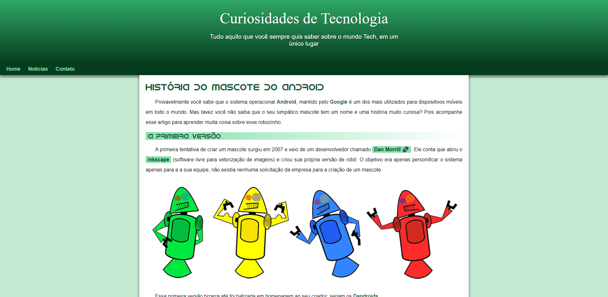
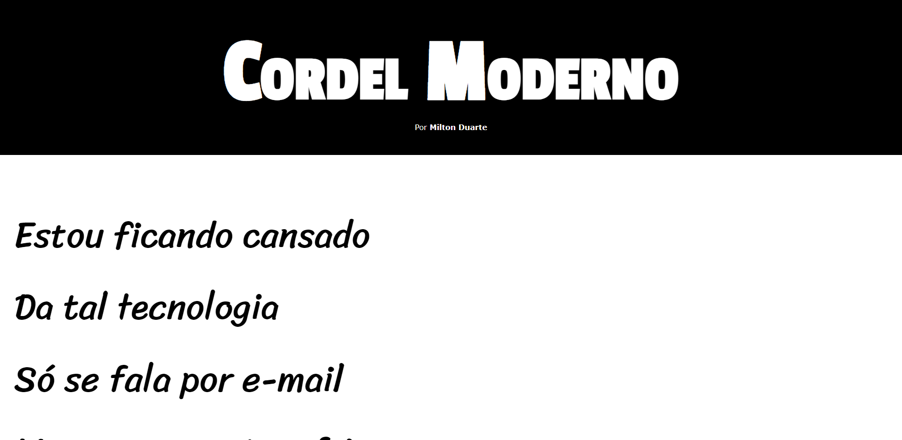
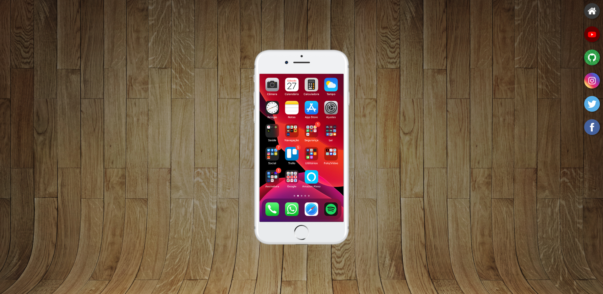
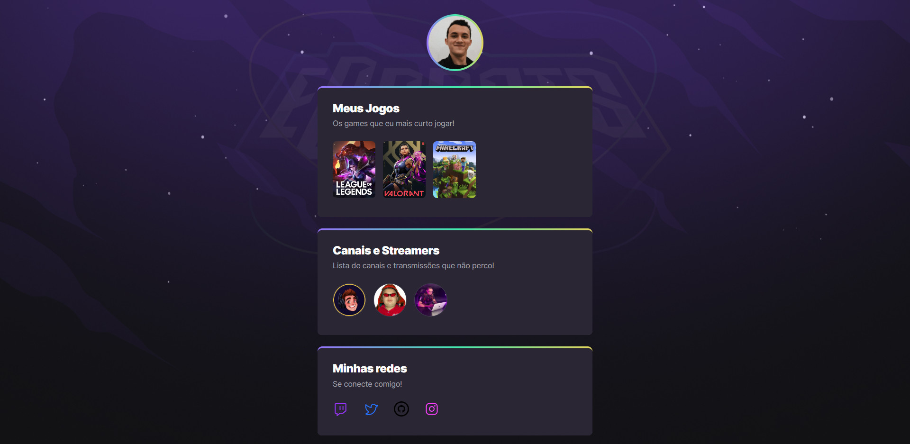
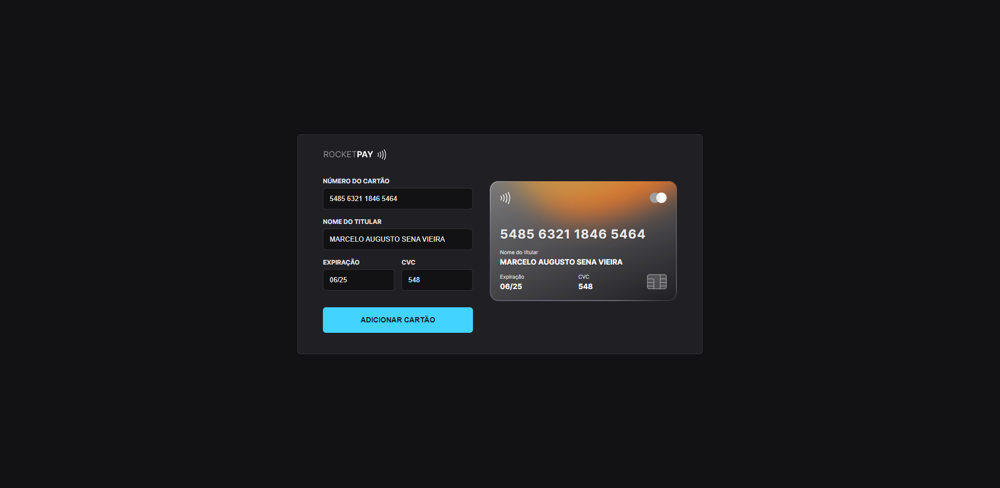
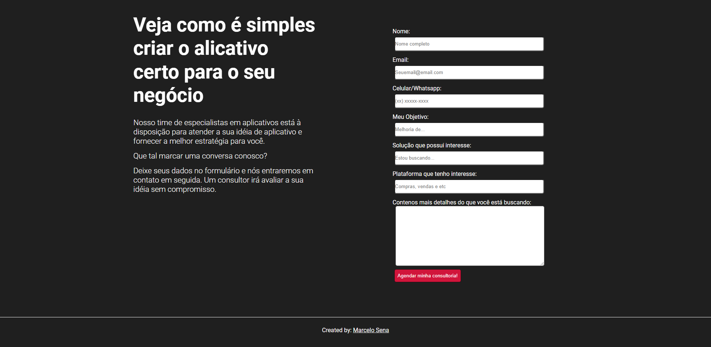
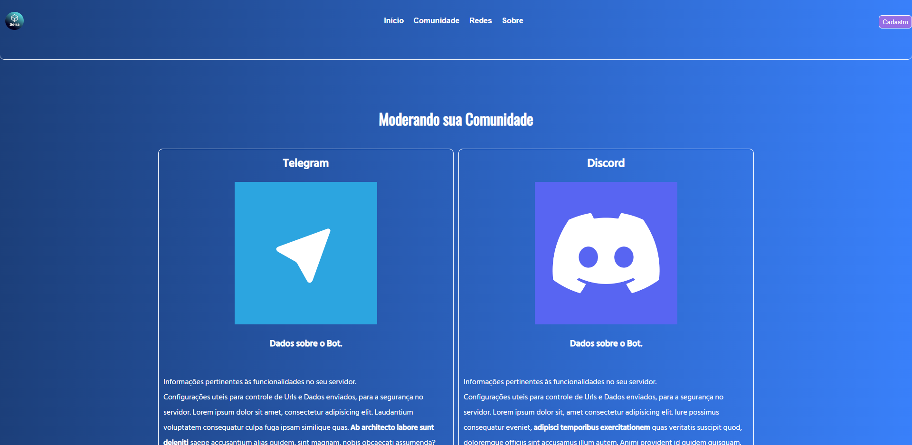
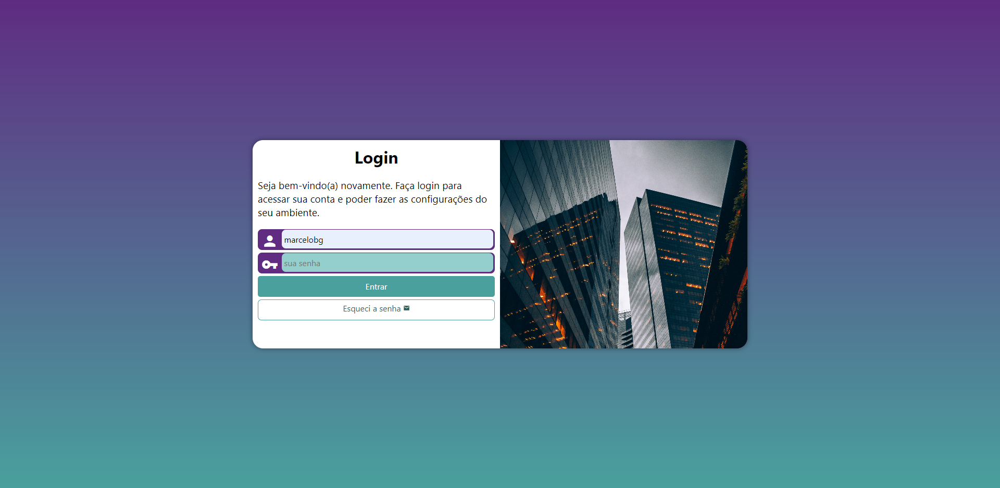

Curiosidades Tecnologicas

Site desevolvido no Curso de HTML e CSS do Professor Gustavo Guanabara, através da plataforma do curso em vídeo. Com foco em treinamento na semântica do HTML, e na formatação dos estilos, foi meu primeiro projeto com uma codificação mais complexa, possuindo alguns efeitos visuais simples.
Tecnologias Usadas: HTML e CSS
Poema Cordel

Site desevolvido também no Curso de HTML e CSS do Professor Gustavo Guanabara. Nesse projeto nos comprometemos na configuração e formatação de imagens, com a utilização de Parallax e outros estilos importantes.
Tecnologias Usadas: HTML e CSS
Redes Sociais

Uma simulação de sistema operacional com HTML e CSS, onde podemos ver as redes sociais, nesse caso minhas redes. E podem também fazer o acesso, ao final da página. Aqui fizemos a utilização de Iframe, para realizar a interação das telas de rede social. Realizado através da plataforma do Curso em Video.
Tecnologias Usadas: HTML e CSS
Perfil NLW-2022

Perfil de interação gamer do Evento Next Level Week (NLW-2022), programa desenvolvido em conjunto ao Evento organizado pela RocketSeat, utilizando HTML e CSS. Nesse projeto utilizamos a interação das animações com Keyframes.
Tecnologias Usadas: HTML e CSS
Registro de Cartão

Programa realizado através do evento Explores Lab JS da RocketSeat, com intuito em masterizar a utilização do Javascript puro, com a manipulação do DOM, e com criação de mascaras para formulários com Imask.
Tecnologias Usadas: HTML, CSS e JavaScript Vanilla
Projeto Formulário

Projeto pessoal, desenvolvido para treino com formulários utilizando HTML e CSS, juntamente com a plataforma de registro SheetMonkeys.
Tecnologias Usadas: HTML e CSS
Landing Page

Projeto pessoal feito para treinamento, uma página de apresentação de produto, um BOT para moderação de comunidade com link para Download e BOT funcional.
Tecnologias Usadas: HTML e CSS
Tela de Login

Projeto de login com validação de formulário pelo lado do "client", além da utilização de efeitos com transition, transition timing e transform.
Tecnologias Usadas: HTML e CSS